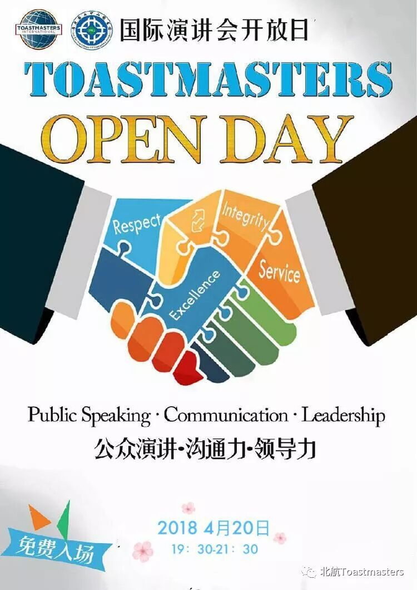
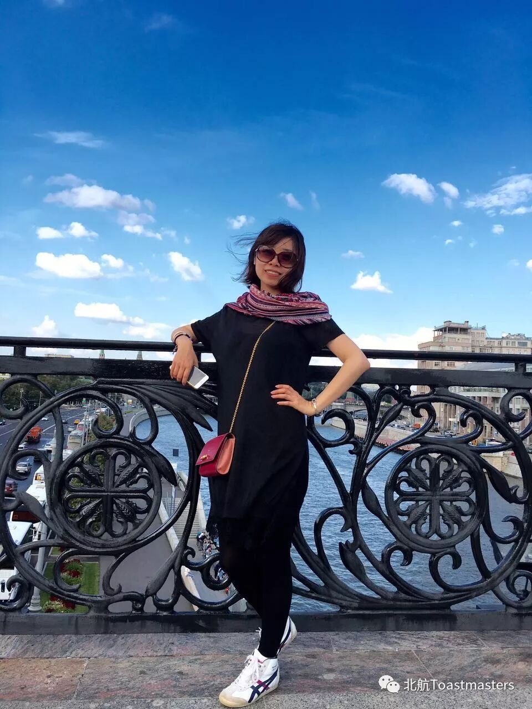
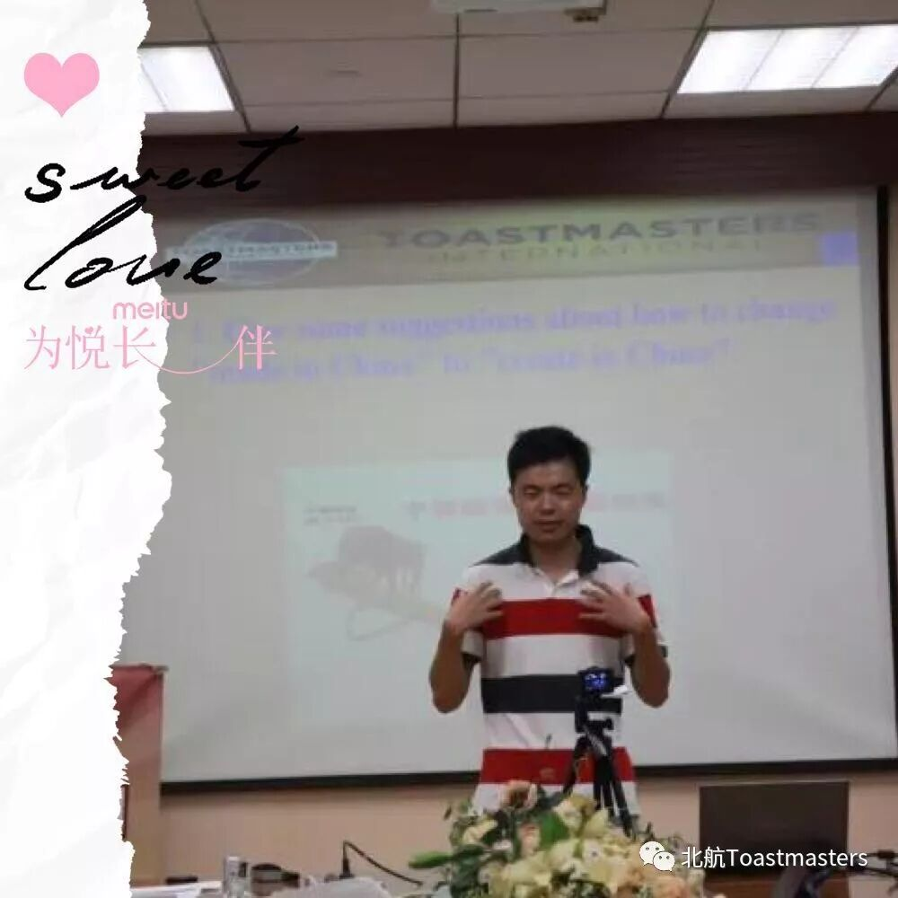
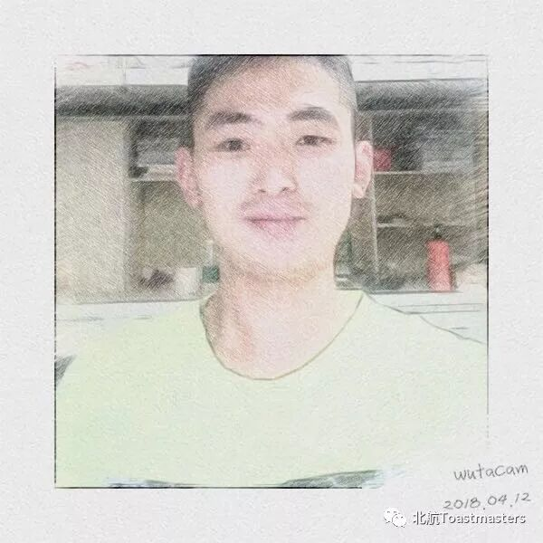
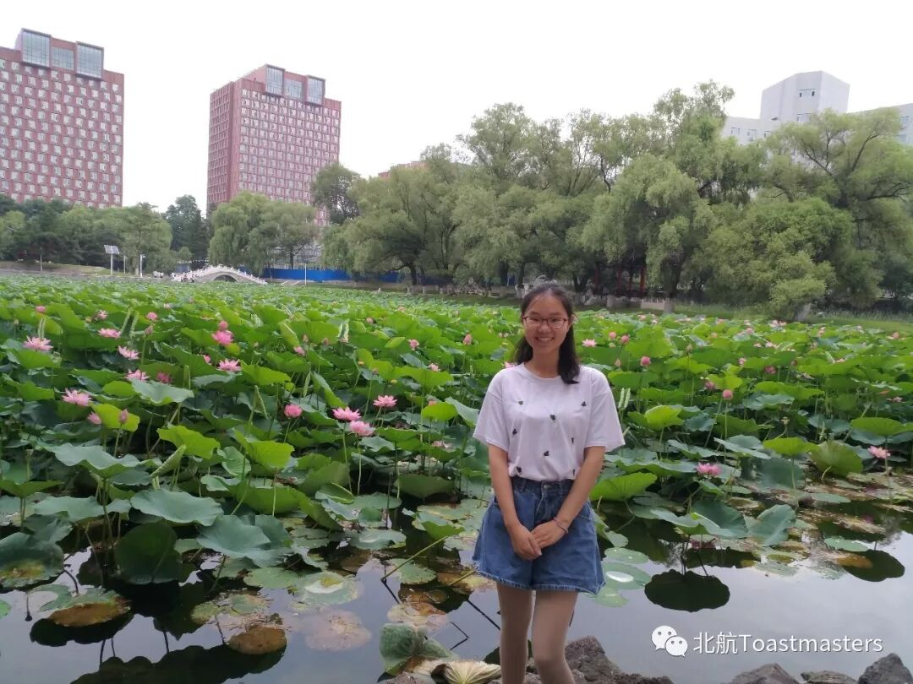
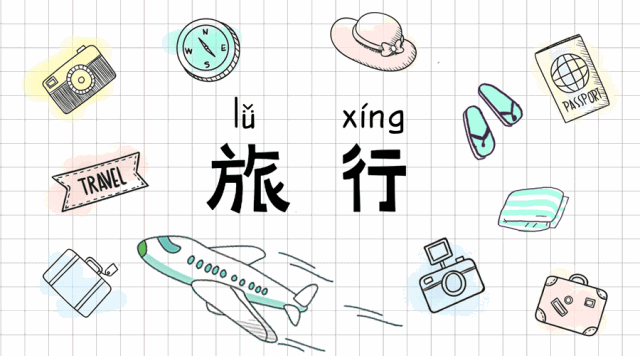
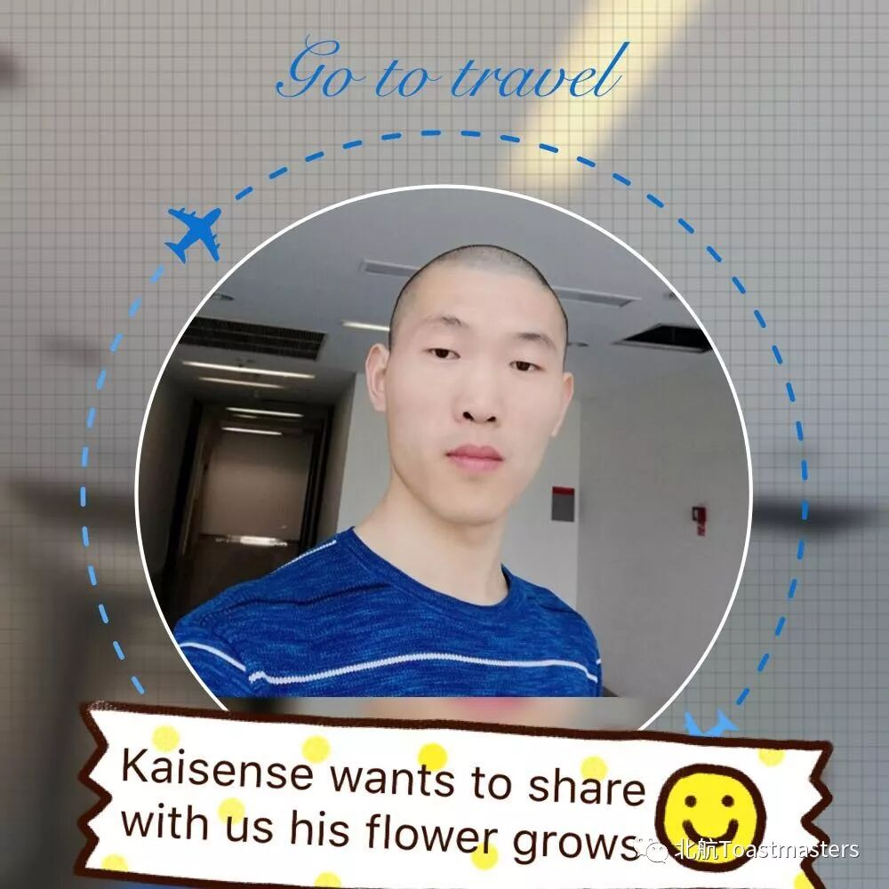
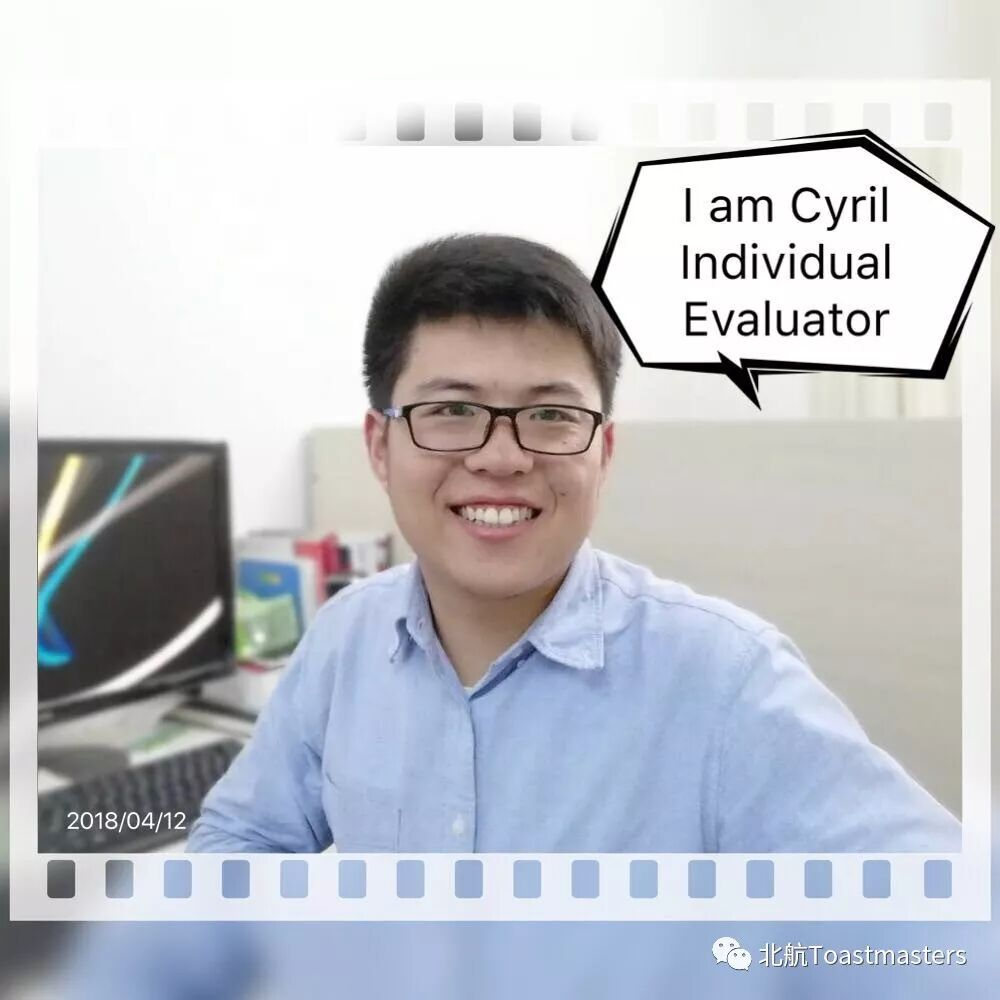
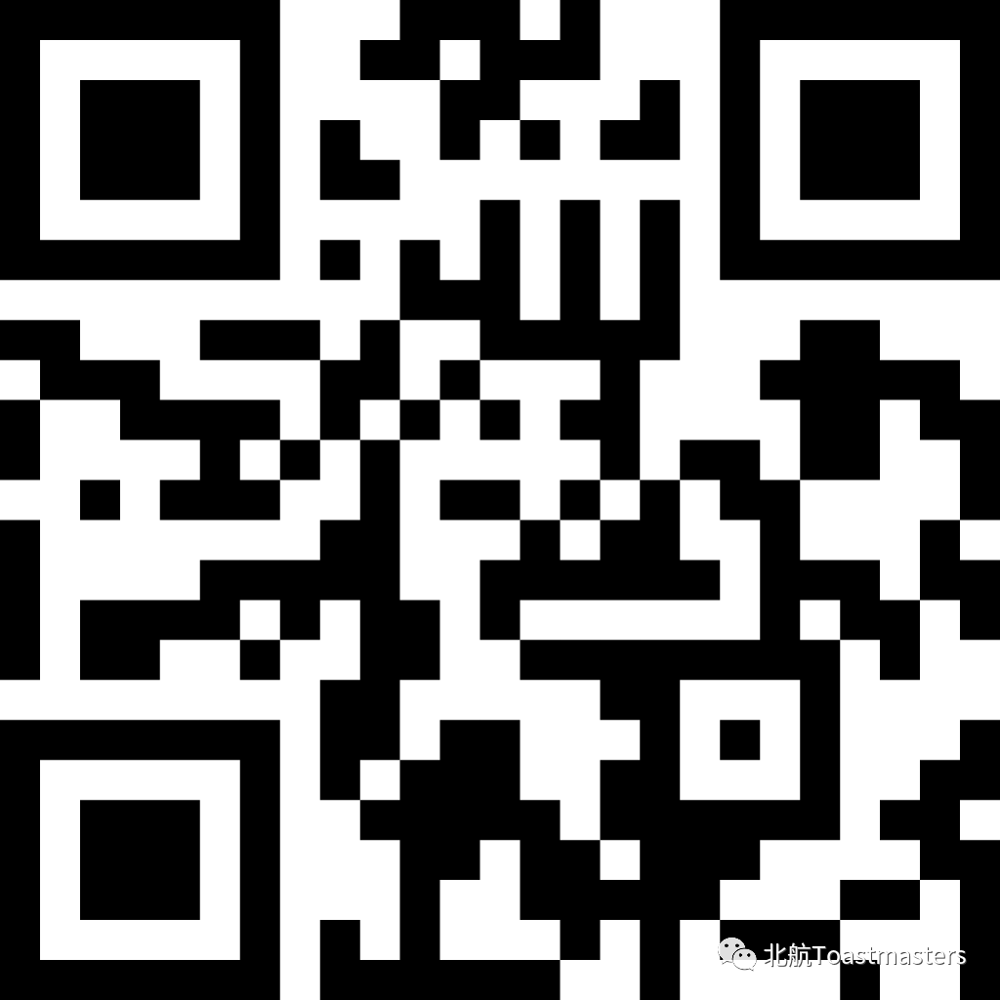

Time: 19:30-21:30, Friday, 20th April
Venue: Room B216, New Main Building, Beihang University

Meeting Role Play
Toastmaster :Claire

General Evaluator：Kevin

Table Topic Master: Samuel

Table topic evalutor :Joy

Table topic
Theme: Holiday
What is the first response coming to you mind once you know you are going to have a holiday, I do believe most of people would think" oh, thanks god, finally holiday is coming that's fantastic ", Lets go to do something just for relaxing.
What would you do on your holiday, will you go shopping, or go on trip or hang out with friends to have something fun and so on. please share with us your story and options on Friday 20th April

Hightlight
Prepared speech
Speaker : Kaisense
Theme: A flower grows from a dead wood
Pathway: Ice Breaker


We will hold Beihang Toastmaster Openday on this coming friday, welcome to you all to come and visit, please scan the QR code as below to register it before you visit. See you all on Friday night


BeihangToastmasters Club is a students' union. At the same time, we belong to a non-profit international organization calledToastmasters International.
Toastmasters International (TI) is a non-profit educational organization that operates clubs worldwide for the purpose of helping members improve their communication, public speaking, and leadership skills.You can find us by the following map of Beihang University.

https://mp.weixin.qq.com/s/QYQ1J-5EnO-PWX5KMPEZdg
本页为抢救式本地归档，图文已永久保存。